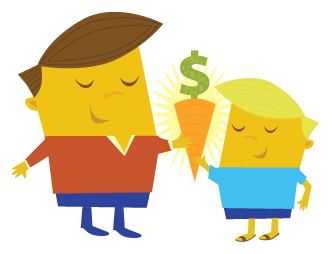

how does it work?

Your Goal: When you create a goal on carrotdangle.com, select your family & social connections to help keep you on-track and give you rewards for your successes. We call these rewards "carrots" and they can be something as simple as a video saying "Great Job!" or a gift certificate from a participating business. When you reach your goals, you unlock the carrots and reap the benefits!
Social support : When you share your goals with others, you are less likely to quit to avoid disappointing them.
Your Friend's Goals: Create carrots for your friends and help them accomplish the things that are important to them, and support each other in hitting your targets!
Accomplishing your goals and helping your friends to do the same feels awesome. We want to add some icing to the cake. We've found some great businesses to provide deep discounts on valuable offers to all of you out there conquering the world. Check out our Sponsors page to get discounts on movie tickets, sports equipment, travel adventures and fine dining!
Social support : When you share your goals with others, you are less likely to quit to avoid disappointing them.
Your Friend's Goals: Create carrots for your friends and help them accomplish the things that are important to them, and support each other in hitting your targets!
Accomplishing your goals and helping your friends to do the same feels awesome. We want to add some icing to the cake. We've found some great businesses to provide deep discounts on valuable offers to all of you out there conquering the world. Check out our Sponsors page to get discounts on movie tickets, sports equipment, travel adventures and fine dining!
Start chasing your dreams (and some carrots) now - Set a goal and get going!